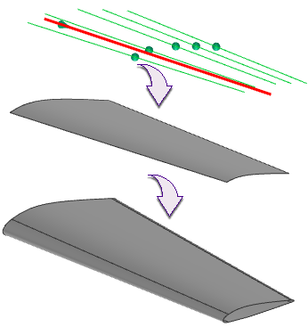

译者注：在 NX 8.5中截面曲面的原文为 Section Surface，而在中文版中有时译作剖切曲面，有时又译为截面曲面，此处将其统一为截面曲面。
使用截面曲面命令可使用二次曲线构造方法来创建通过曲线或边的截面的曲面。
截面曲面特征创建自一系列二次曲线，这些曲线通过剖切指定的曲线或面进行计算。然后，计算的截面曲线会进行扫掠以创建体。
下图显示用于创建机翼曲面的五点类型的截面曲面特征。

|
应用模块 |
建模、外观造型设计 |
|
工具条 |
截面曲面 曲面→截面曲面 |
|
菜单 |
插入→扫掠→截面 |